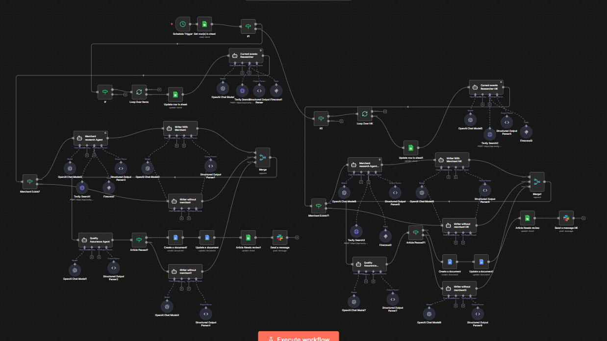

A fully agentic content pipeline that researches, writes, QA-checks, and revises SEO articles in two languages simultaneously.
A merchant education platform needed consistent Expert Tips articles for Singapore (English) and Hong Kong (Cantonese). Each market required its own tone, local context, and featured merchant.
Manual production couldn't scale and quality was inconsistent without a formal review process. Generic AI output was not acceptable — the content needed to feel authentic, provide genuine value, and maintain brand voice across both markets.
A 63-node n8n workflow with parallel SG and HK pipelines. A schedule trigger pulls the article queue from Google Sheets and branches into two simultaneous pipelines that run independently.
The Merchant Research Agent scrapes the featured merchant's Carousell profile and web presence via Firecrawl. The Current Events Researcher pulls fresh local context via Tavily. The Writer Agent drafts the article. The QA Agent scores it against 4 strict criteria. If the score is below 70, an auto-revision loop kicks in.
Produces warm, conversational English targeting:
Operates entirely in colloquial Cantonese (廣東話口語) — not Mandarin, not formal written Chinese. The HK QA agent evaluates against Hong Kong-specific linguistic markers.
Warm, conversational, non-salesy, reads like a knowledgeable friend
5-7 genuinely actionable tips specific enough to act on today
Colloquial headline, clear sections, scannable on mobile
Merchant story woven in naturally, not as a promotional box; specific scraped details present
Articles scoring below 70 trigger a revision brief sent back to the Writer Agent with specific feedback on what needs improvement. The system runs up to 3 revision attempts before escalating to Slack for human review. Most articles pass on the first or second attempt, ensuring consistent quality without constant human oversight.

Parallel SG and HK branches with Merchant Research → Current Events → Writer → QA → Auto-Revision loops. This is the most visually impressive workflow in the portfolio.
Revision Loop: Score <70 → Revision Brief → Writer Agent (up to 3 attempts) → Slack escalation if needed
Let's build an intelligent content pipeline that maintains quality across multiple languages and markets.